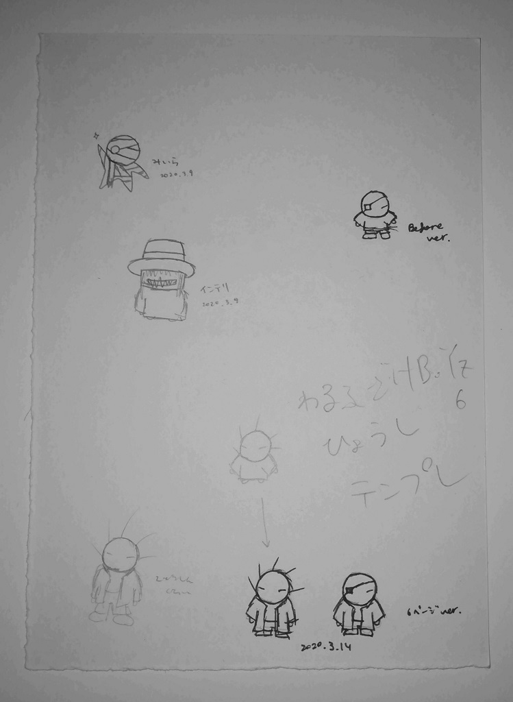
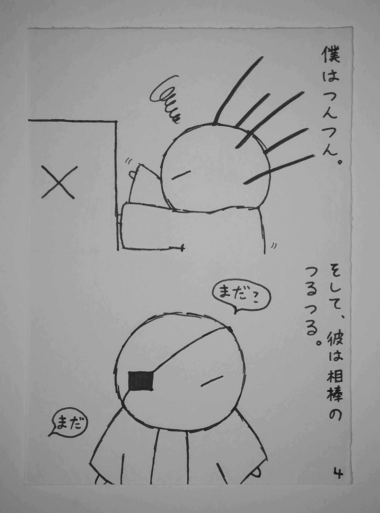

神戸大学漫画研究会の図書館
神戸大学漫画研究会の図書館
勉強会：第4回 初心者向け 漫画の描き方
0.自己紹介
18(2018年度入部生)の祐樹です。
イベント係をしています。
主にロックンロール・R&Bの漫画表現について研究しています。
1.テーマ
タイトルにある通り、初心者向けに漫画の描き方について書いていきます。
ただし、技術的な部分ではなく、漫画を描くときの考え方や心構えが中心テーマです。
（技術的な部分に関しては、専門書を読むほうが早いし正確です。）
2.まず、何を表現したいかを決めよう
自分が好きなもの・表現したいものを思い浮かべてみましょう。
情報収集をしてもよいですが、最終的には自分の頭で考えることが大切です。
3.では、実際に漫画を描いてみよう
ここでは、私を例に、漫画を描く手順について書いていきます。
（1）ネーム（下描き）を描く
私は原稿用紙の裏に描いています。
（図1:『69n6 BRZS』第1話のネーム）
 (図1)
（2）本描きをする
私は、水色シャーペンで下描きしてから、黒ボールペンで本描きしています。
（図2:『69n6 BRZS』第1話 より）
 (図2)
ここで書いた手順は、あくまでも1つの例です。
漫画の描き方に一般的なやり方・正解はないので、自分に合った方法を試してみてください。
4.漫画を発表しよう
作品が完成したら、それを発表しましょう。
他の人から感想やアドバイスをもらえるだけでなく、達成感を味わえます。
（神戸大学漫画研究会では希望すれば年に1回同人誌即売会に参加することができるので、そこを発表の場としてもよいでしょう。）
5．漫画を描いていくなかで考えてほしいこと
・技術の有無（いわゆる"上手い・下手"）は大事なのか。「リアルさ」は必要か。
・万人受けを意識するべきか、自分の特徴を押し出すべきか。流行りに乗るべきか。
・没作品（失敗作）を捨てるべきか、保管しておくべきか。
・漫画は数字で評価（順位・点数付け）されるものなのか。されるとすれば、その評価基準は何か。
…など。
これらは正解のない問いです。
皆さんなりに答えを出してほしいので、あえてここでは答えを書きません。
自分なりの答えが見つかったら、いつか私に話してくださいね。
6.参考図書
・荒木飛呂彦（2015）『荒木飛呂彦の漫画術』集英社：商業漫画家向けです。漫画を描くために必要な技術や実際の漫画家の仕事などについて書かれています。近いうちに部室に置く予定です。
・川崎昌平（2019）『同人誌をつくったら人生変わった件について。』幻冬舎：同人漫画家向けです。同人誌を描くときの心構えや同人誌即売会への準備の進め方などについて書かれています。既に部室に置いてあります。
＊ここに載っている画像は、すべて私の作品です。当然ですが、無断転載などは厳禁です。
（担当：祐樹）